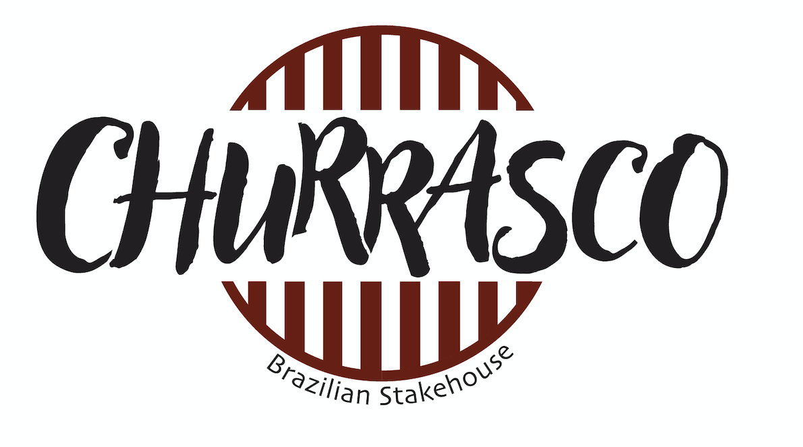
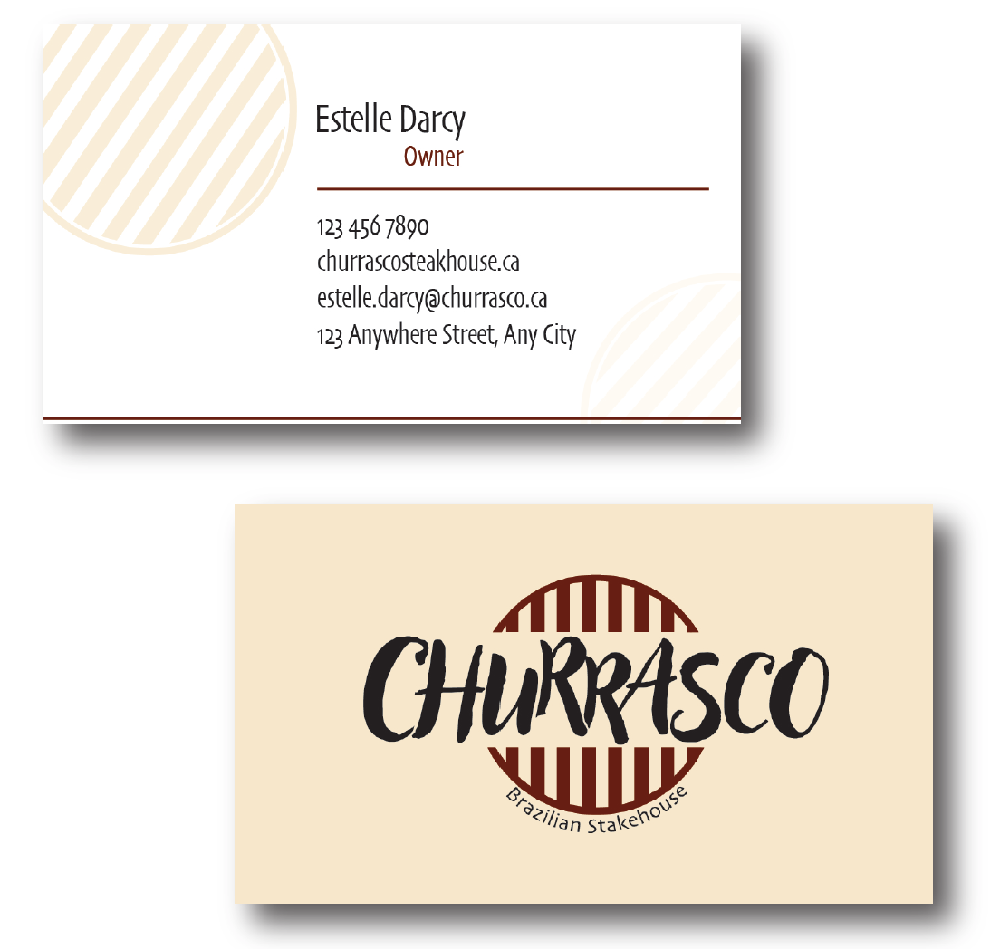
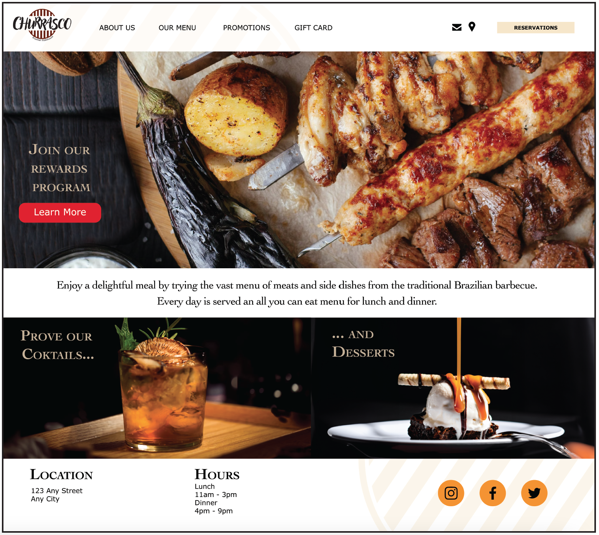
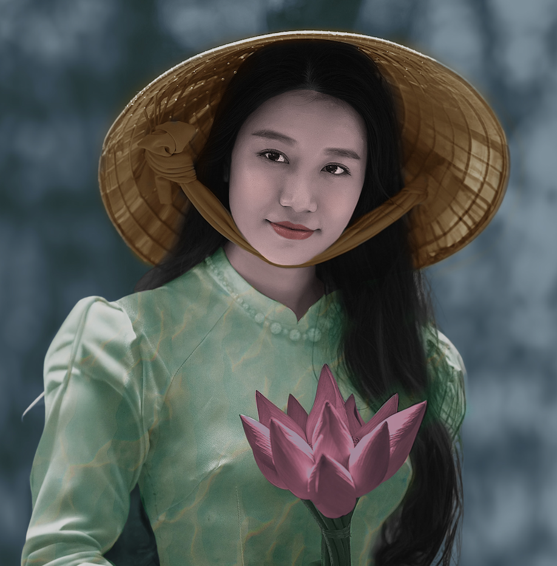
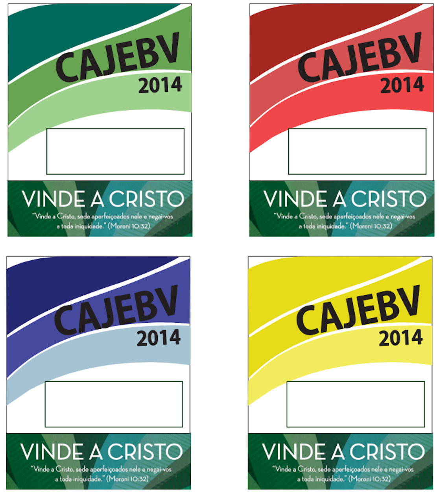
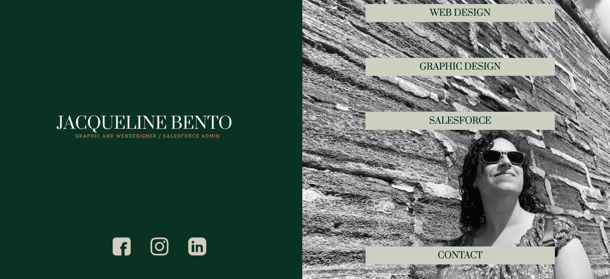
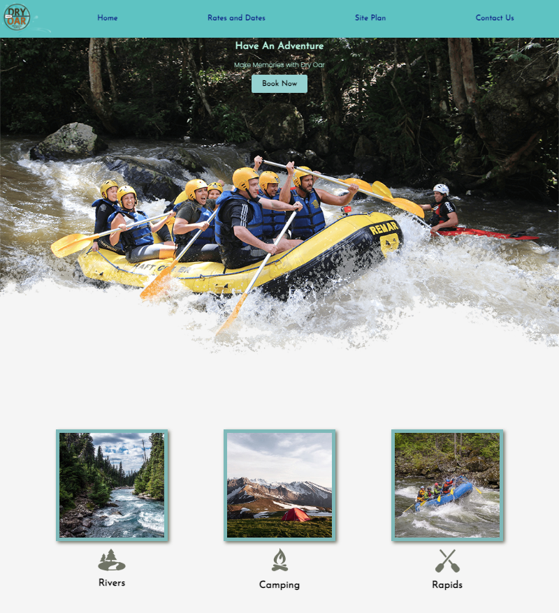

Churrasco Steakhouse Project



Logo, business card and web design for home page
Illustration
Illustration
Photo Editing

Application of colors and textures to a black and white image
Branding for events

Logo and badge for a youth conference
Web Design
 My current portfolio website  Project Dry Oar Learning project
About me
Junior web designer and developer with an extended background in Graphic Design. Currently studying Web Design and Development at SAIT . My biggest interest in the design field is the ability to create effective solutions without leaving aside the visual aspect. I am excited about all the creativity that involves this career, however, my main values as a professional are objectivity and commitment to deadlines. In my opinion, the creative process must keep in mind the circumstances of applicability and execution time, working towards these goals is my main source of motivation and measure of success. I have had opportunities to work in leadership positions as well as within teams and I know how essential it is to maintain an environment of respect and cooperation between everyone so that work flows smoothly and the communication remains always open and accessible.